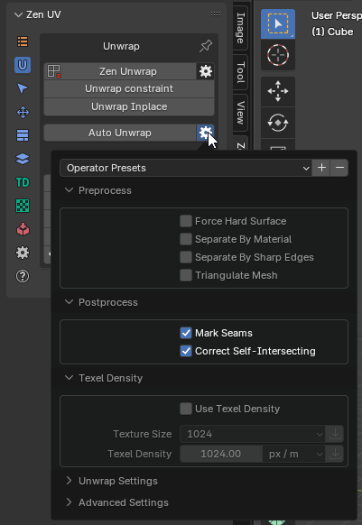

Auto Unwrap
Automated UV unwrapper based on a utility written by Eskil Steenberg www.ministryofflat.com.
This operator is essentially a bridge for working with MinistryOfFlat.
This software is designed exclusively for Windows, so this operator will not be available on Linux or Mac OS.
https://www.quelsolaar.com/ministry_of_flat/
Warning
The Auto Unwrap operator utilizes a third-party application, which has its own license terms.
Please review the license agreement of the external software before use and determine whether you can legally use it.
Warning
Since this software is third-party, it is not distributed with Zen UV.
Therefore, we will outline the full activation process, starting from the first click on the Auto Unwrap button.
If you have just installed the add-on, go to the Unwrap tab in the Zen UV panel in any context (UV Editor or 3D View).
Find and click the Auto Unwrap button. You will see a popup like the one shown in the screenshot below.
{kind=link}
The message displayed will be:
'You are about to download "UV Automated Unwrapper" from the Ministry of Flat.',
'Please note that by pressing the "OK" button, you acknowledge that you have read and agree',
'to the terms and conditions of the free license associated with this tool.',
'We recommend reviewing these terms carefully to understand your rights and responsibilities.'
If you agree with the stated terms, press the OK button.
The software will be automatically downloaded and installed into the Blender settings folder:
scripts\presets\zen_uv\auto_uv_unwrap\MinistryOfFlat_Release.
For more details, refer to the Modules section in Addon Preferences.
The download time depends on your internet speed, but in general, it happens quite quickly.
This software does not require installation and runs in the console, so no special permissions are typically needed.
However, if any issues arise, ensure that Blender has permission to write to disk.
Once the download is complete, the unwrapping process will start immediately using the parameters specified in the operator settings.
Tip
You can configure the operator’s properties before running it. 
You can also save your own presets using Blender’s standard preset system.
{kind=link}
This utility is universal, so we have already set up some default configurations for better results.
However, you can create and save your own presets for any specific needs.
If you want to return to the default settings, use the Restore Operator Defaults function.
{kind=link}
Below, we provide some explanations about why there are so many settings and what to expect when changing them.
First of all, it’s important to understand that we do not modify your geometry, only the current UV map.
Thus, geometry attributes (such as Vertex Maps, Vertex Colors) will remain unchanged.
Inactive UV Maps will also stay the same.
{kind=link}
- Preprocess - These settings activate processes before sending data to MOF.
- Postprocess - These settings activate processes after the UV map is returned from MOF.
- Texel Density - Allows you to set TD for automatic unwrapping. This process is controlled directly by MOF.
- Unwrap Settings - These settings configure MOF’s core behavior.
- Advanced Settings - These settings provide additional controls inside MOF and are marked as “Advanced”.
Let’s quote the original developer:
“All following settings are for debugging purposes only.
Making any change to these settings is likely to result in worse UV mapping and/or longer processing time.”
— Ministry of Flat
Preprocess Settings
{kind=link}
- Force Hard Surface - Forces the algorithm to treat the surface as a hard surface, ensuring precise handling of sharp edges and rigid structures.
- Separate By Material - Splits the mesh by materials before unwrapping.
- Separate By Sharp Edges - Splits the mesh by sharp edges before unwrapping.
- Triangulate Mesh - Converts n-gons (faces with 4+ vertices) into triangles.
If the mesh contains complex n-gons, they may be internally split within MOF,
while still being treated as a single structure in the mesh.
This can result in gaps in what should remain unified, appearing as stretched polygons.
This issue must be corrected manually.
Postprocess Settings
{kind=link}
- Mark Seams - Automatically assigns seams.
- Correct Self-Intersecting - Fixes UV faces that have self-intersecting UV edges.
Texel Density Settings
{kind=link}
- Use Texel Density - Scales the UVs to match the specified texel density value.
- Texture Size - Image size preset.
- Texel Density - The texel density value.
Unwrap Settings (MOF Core)
The following settings were created by the MOF developer, so we present them as they are.
{kind=link}
- Auto Detect Hard Edges - The UV unwrapper will try to separate all hard edges.
Useful for lightmapping and normal mapping. - Use Normal - Uses the model’s normals to help classify polygons.
- Overlap Identical Parts - Overlaps identical parts to save texture space.
- Overlap Mirrored Parts - Overlaps mirrored parts to save texture space.
- Scale UV to Worldspace - Scales the UVs to match their real-world scale, extending beyond the 0-1 UV space.
Advanced Settings
{kind=link}
- Stretch - Stretches islands too wide to fit within the texture.
- Packing - Packs UV islands into a rectangular layout.
- Cut - Cuts awkward shapes to optimize layout coverage.
- Squares - Identifies individual polygons with right angles.
- Vertex Weld - Merges duplicate vertices.
Does not affect the output polygon or vertex data. - Quads - Detects triangle pairs that can form quads, improving patch distribution.
The Advanced Settings list is much larger.
We have highlighted only a few useful options.
You can manually enable other options using Extra Arguments.
- Extra Arguments - Allows additional command-line arguments to be passed to the UV unwrapping application.
Ministry OF Flat UnWrapConsole3.exe Documentation for version 3.7.2
It only takes .obj files, but most tools can import and export obj-files, so it should work for most usages.
UI Version
To change the camera, press the right mouse button. Right + Left dollys, and Right + Middle pans. Multi-touch camera controls also work (two fingers to tumble/zoom and three to pan), as well as standard Maya camera controls by pressing Alt + mouse buttons.
Click in empty space to switch between 3D and UV view.
Contact and Feedback
If you encounter any issues, please mail me, and if possible, send me the mesh you have problems with. If you can’t send the mesh, a screenshot will also do. If you are having problems, you can turn on the “validate” option in the settings. This will run a bunch of validation steps and output any errors it finds in the betray_stdout.txt file. It only gets better if I know what’s wrong with it!
UV mapping is subjective, so if you have opinions, please let me know. If you think it sucks, LET ME KNOW and tell me why.
Note: I am more focused on hand-made meshes with good topology than on scanned meshes, so that will remain my focus for now.
Follow me on Twitter at @quelsolaar. I will post when I release new versions and when issues are fixed.
If you are interested in Licensing the full version, contact license@ministryofflat.com.
Settings
Texture Resolution
- Description: Resolution of texture, to give the right amount of island gaps to prevent bleeds.
- Command-line usage:
-RESOLUTION <VALUE> - Default value:
1024
Separate Hard Edges
- Description: Guarantees that all hard edges are separated. Useful for lightmapping and normal mapping.
- Command-line usage:
-SEPARATE <TRUE/FALSE> - Default value:
FALSE
Aspect
- Description: Aspect ratio of pixels. For non-square textures.
- Command-line usage:
-ASPECT <VALUE> - Default value:
1.000000
Use Normal
- Description: Use the model’s normals to help classify polygons.
- Command-line usage:
-NORMALS <TRUE/FALSE> - Default value:
FALSE
UDIMs
- Description: Split the model into multiple UDIMs.
- Command-line usage:
-UDIMS <VALUE> - Default value:
1
Overlap Identical Parts
- Description: Overlap identical parts to take up the same texture space.
- Command-line usage:
-OVERLAP <TRUE/FALSE> - Default value:
FALSE
Overlap Mirrored Parts
- Description: Overlap mirrored parts to take up the same texture space.
- Command-line usage:
-MIRROR <TRUE/FALSE> - Default value:
FALSE
Scale UV Space to Worldspace
- Description: Scales the UVs to match their real-world scale, going beyond the zero-to-one range.
- Command-line usage:
-WORLDSCALE <TRUE/FALSE> - Default value:
FALSE
Texture Density
- Description: If worldspace is enabled, this value sets the number of pixels per unit.
- Command-line usage:
-DENSITY <VALUE> - Default value:
1024
Seam Direction
- Description: Sets a point in space that seams are directed toward. By default, it’s the center of the model.
- Command-line usage:
-CENTER <X VALUE> <Y VALUE> <Z VALUE> - Default value:
0.000000 0.000000 0.000000
Debugging Settings
Warning:
All following settings are for debugging purposes only.
Making any change to these settings is likely to result in worse UV mapping and/or longer processing time.
Suppress Validation Errors
- Description: Faulty geometry errors will not be printed to standard output.
- Command-line usage:
-SUPRESS <TRUE/FALSE> - Default value:
FALSE
Quads
- Description: Searches the model for triangle pairs that make good quads. Improves the use of patches.
- Command-line usage:
-QUAD <TRUE/FALSE> - Default value:
TRUE
Vertex Weld
- Description: Merges duplicate vertices. Does not affect the output polygon or vertex data.
- Command-line usage:
-WELD <TRUE/FALSE> - Default value:
TRUE
Flat Soft Surface
- Description: Detects flat areas of soft surfaces in order to minimize distortion.
- Command-line usage:
-FLAT <TRUE/FALSE> - Default value:
TRUE
Cones
- Description: Searches the model for sharp cones.
- Command-line usage:
-CONE <TRUE/FALSE> - Default value:
TRUE
Cone Ratio
- Description: The minimum ratio of a triangle used in a cone.
- Command-line usage:
-CONERATIO <VALUE> - Default value:
0.500000
Grids
- Description: Searches the model for grids of quads.
- Command-line usage:
-GRIDS <TRUE/FALSE> - Default value:
TRUE
Strips
- Description: Searches the model for strips of quads.
- Command-line usage:
-STRIP <TRUE/FALSE> - Default value:
TRUE
Tubes
- Description: Finds tube-shaped geometry and unwraps it using cylindrical projection.
- Command-line usage:
-TUBES <TRUE/FALSE> - Default value:
TRUE
Packing
- Description: Packs islands into a rectangle.
- Command-line usage:
-PACKING <TRUE/FALSE> - Default value:
TRUE
Packing Iterations
- Description: How many times the packer will pack the islands to find the optimal spacing.
- Command-line usage:
-PACKING_ITERATIONS <VALUE> - Default value:
4
Validate
- Description: Validates geometry after each stage and prints out any issues found (for debugging only).
- Command-line usage:
-VALIDATE <TRUE/FALSE> - Default value:
FALSE